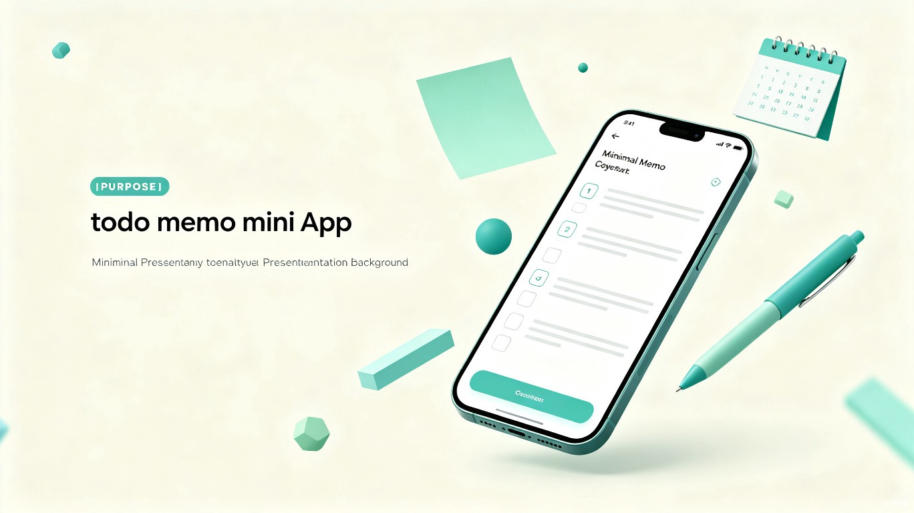

轻量、高效、随时记录。让每一件重要的事，都不会被遗忘。
Contents · 内容导览
挖掘用户在日常任务管理中的真实困扰。
明确产品服务的学生与职场人群体。
阐述随身备忘录的核心竞争优势。
展示小程序的关键功能与界面设计。
Pain Points · 项目痛点
课程作业、工作任务、生活琐事交织，重要事项容易被淹没在海量信息中，导致遗漏和延误。
缺乏有效的任务规划和优先级排序，时间被碎片化消耗，该做的事一拖再拖。
备忘录、日历、便签、提醒分散在不同 App，切换成本高，数据无法互通统一管理。
Users · 目标用户
课程作业、考试复习、社团活动、实习申请——学业与生活事务繁杂，需要清晰的任务清单来规划每一天。
工作任务、会议安排、项目进度、周报提交——多线程工作并行，高效的时间管理是职场进阶的关键。
客户预约、创作计划、收支管理、交付节点——自律即自由，一个可靠的工具是自由职业者的最佳搭档。
Value · 产品价值
基于微信小程序，无需下载安装，打开即记。手机在手，备忘无忧。
清晰的分类标签、优先级排序、完成状态追踪，让任务管理井井有条。
到期自动推送提醒，支持重复周期设置，重要事项从此不再遗漏。
Features · 功能预览
一键新建备忘，支持文字输入、语音转文字、图片附件等多种记录方式，3 秒完成记录。
学习、工作、生活多维度标签体系，支持自定义分类，快速筛选，任务清晰不混乱。
支持定时提醒、位置提醒、重复周期提醒，通过微信服务通知精准触达，不再错过。
云端自动备份，换设备登录数据无缝同步，支持历史记录查看与数据导出。
Preview · 界面展示
随身备忘录——让每一件重要的事，都不会被遗忘。